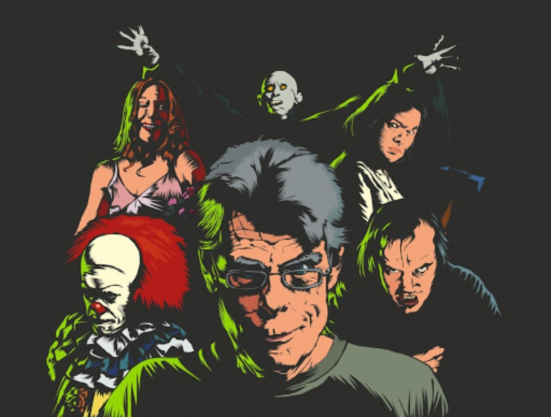

LOS TRES GRANDES DEL TERROR
Edgar Allan Poe

Edgar Allan Poe (Boston, Estados Unidos, 19 de enero de 1809-Baltimore, Estados Unidos, 7 de octubre de 1849)
fue un escritor, poeta, crítico y periodista romántico estadounidense, generalmente reconocido como uno de los maestros
universales del relato corto, del cual fue uno de los primeros practicantes en su país. Fue renovador de la novela gótica,
recordado especialmente por sus cuentos de terror. Considerado el inventor del relato detectivesco, contribuyó asimismo con
varias obras al género emergente de la ciencia ficción. Por otra parte, fue el primer escritor estadounidense de renombre
que intentó hacer de la escritura su modus vivendi, lo que tuvo para él lamentables consecuencias.
H.P. Lovecraft

Howard Phillips Lovecraft (Providence, Rhode Island; 20 de agosto de 1890-ibid.; 15 de marzo de 1937), más conocido como H. P. Lovecraft,
fue un escritor estadounidense, autor de relatos y novelas de terror y ciencia ficción. Se le considera un gran innovador del cuento de terror,
al que aportó una mitología propia —los Mitos de Cthulhu—, desarrollada en colaboración con otros autores, actualmente en vigencia.
Su obra constituye un clásico del horror cósmico, una línea narrativa que se aparta de las tradicionales historias de terror sobrenatural —satanismo, fantasmas—,
incluyendo elementos de ciencia ficción como, por ejemplo, razas alienígenas, viajes en el tiempo o existencia de otras dimensiones.
Stephen King

Stephen Edwin King (Portland, Maine; 21 de septiembre de 1947), más conocido como Stephen King y ocasionalmente por su seudónimo Richard Bachman,
es un escritor estadounidense de novelas de terror, ficción sobrenatural, misterio, ciencia ficción y literatura fantástica. Sus libros han vendido
más de 350 millones de copias y en su mayoría han sido adaptados al cine y a la televisión. Ha publicado 61 novelas (siete de ellas, bajo el seudónimo
Richard Bachman) y siete libros de no ficción. Ha escrito, además, alrededor de doscientos relatos y novelas cortas, la mayoría de los cuales han sido
recogidos en once colecciones.